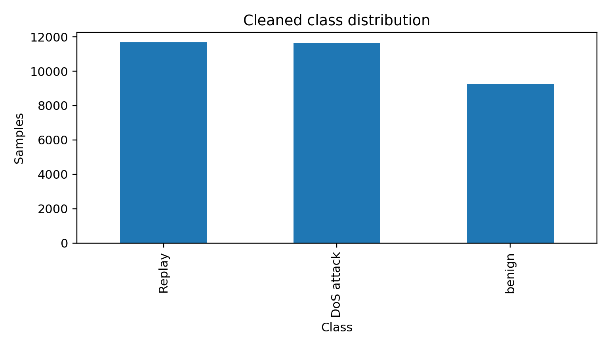
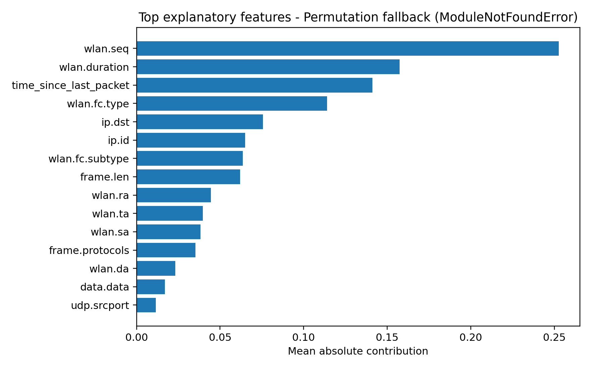
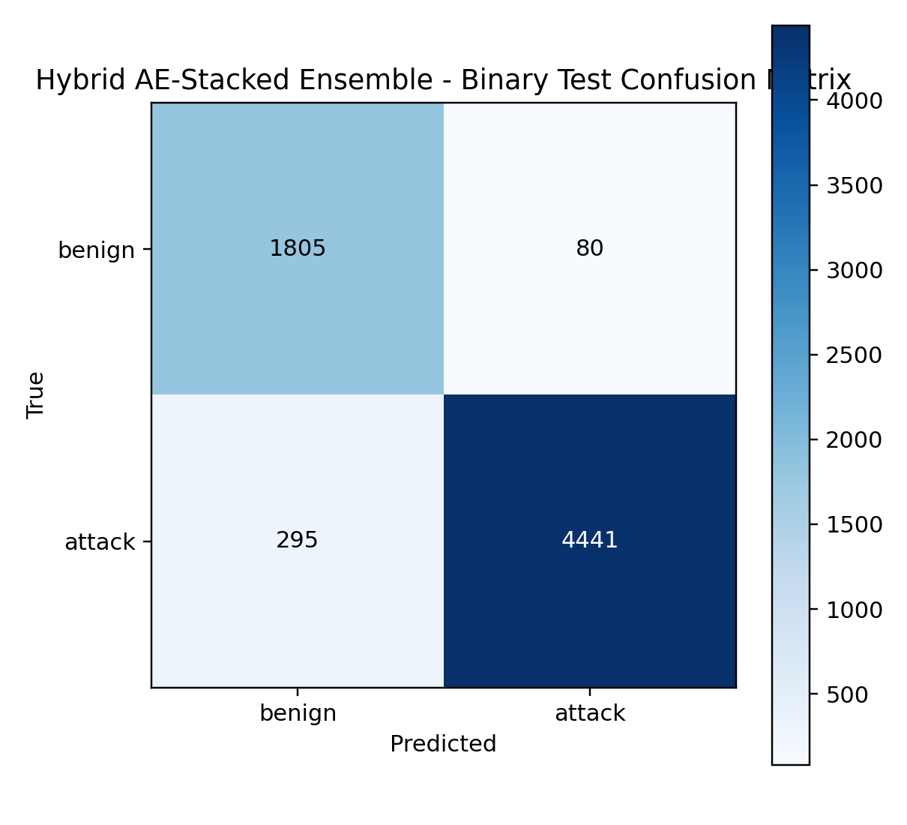
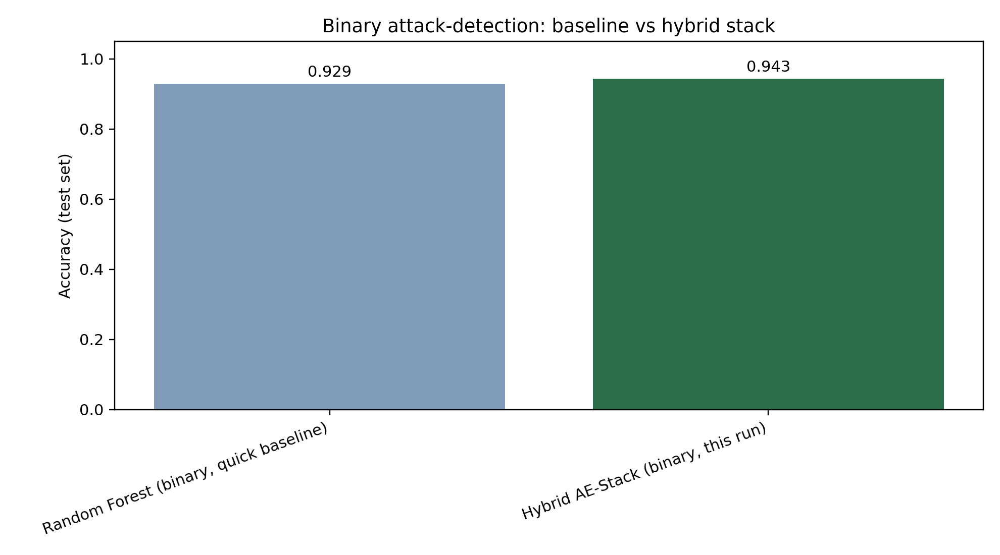

01 — The Problem
UAV swarms trust their radio links. That trust is the attack surface.
Swarms coordinate over shared wireless data-links to fly surveillance, disaster-response, agricultural, and logistics missions. That same real-time communication exposes them to Denial-of-Service flooding and packet Replay — where previously captured legitimate traffic is retransmitted to disrupt or deceive the network.
Existing UAV security research typically assumes centralized training, offers little explainability, and treats models as static once deployed. SEAQL — Scalable, Explainable, and Adaptive Quantum-Resilient Federated Learning — is built to close that gap.
02 — Why UAV Swarms, Specifically
Swarms are the hard case: many nodes, heterogeneous data, no central trust anchor.
A single UAV's traffic looks nothing like another's — different missions, altitudes, and flight phases produce structurally different network patterns. That heterogeneity (non-IID data) is exactly what breaks textbook federated learning assumptions, and exactly what this research targets directly rather than assuming away.
No single point of failure
A hierarchical client → cluster → server design avoids depending on one always-available central aggregator.
Genuinely non-IID
Per-client class distributions in this project's simulation are severely skewed (Dirichlet α = 0.30) — not a convenient IID shortcut.
Bandwidth and energy matter
UAV links are low-bandwidth; communication-efficient update compression is part of the design, not an afterthought.
03 — Dataset
A real, audited UAV packet-capture dataset — not synthetic traffic.

04 — Research Roadmap
From proposal to implementation.
The original research proposal scoped six methodology phases. Here's what was proposed, set directly against what was actually implemented and evaluated — so the transition from plan to delivered system is transparent.
Proposed (Research Proposal)
Implemented (This Project)
05 — Research Pipeline & Methodology
Nine stages, each one earning the next.
Every stage below was actually run and measured — this is the real chronological progression of the research, not a marketing pipeline diagram.
06 — Experimental Results
From 46.7% to 93.3% macro F1 — every model measured on the same test split.
Each bar is a model that was trained and evaluated on the same held-out test split. The jump at the end reflects a deliberate, evidence-based decision — not a change in dataset or a lucky run.
Model progression (macro F1)
| Model | Accuracy | Macro F1 | Weighted F1 | AUC |
|---|
Baseline confusion matrices
Where each model's errors actually land — laid out here rather than just asserted in text.
Random Forest, the 5-model hybrid stack, and an independent hierarchical 2-stage classifier all plateaued at 72–77% macro F1 on the 3-class task. Confusion was concentrated almost entirely between DoS attack and Replay — because a Replay attack, by definition, retransmits previously captured traffic, so its packet-level signature resembles what it's replaying. That's a property of the data, not a weakness in any one model. It directly motivated reframing the task as binary attack-vs-benign detection for the final model.
07 — Federated Learning, In Depth
Privacy-preserving by construction: no raw traffic ever leaves a client.
⬡ Illustrative Architecture — not a data-driven chartRound-by-round convergence
Non-IID client data distribution
Continual learning: macro F1 before vs. after incremental update
The thesis reports federated learning and continual learning as single summary figures (59.7% macro F1; sequential-chunk drift adaptation). The three charts above come directly from the underlying run logs in this repository — real, unedited output — rather than being restated verbatim in the thesis narrative, which is why they're marked as supplementary here.
08 — Explainability
Every decision comes with a "why," not just a label.
Because "Explainable" is central to this project, every classification is paired with a feature-importance signal — supporting operator trust and post-incident forensic analysis, rather than treating the model as a black box.
⬡ Explainability workflow — designed pipeline
09 — The Final Proposed Model
Hybrid AE-Stacked Ensemble — Binary Attack Detection
An autoencoder trained only on benign traffic contributes a reconstruction-error + latent-embedding anomaly signal. That signal, plus the original 32 packet features, feeds a 5-model stacking ensemble — Random Forest, XGBoost, LightGBM, Extra Trees, and an MLP — combined by a Logistic Regression meta-learner.


10 — Research Contributions
What this project actually adds.
Limitations, stated plainly
- The 72–77% ceiling on the 3-class task is a data-level property, confirmed three independent ways — not something further tuning is expected to fix.
- Federated learning was validated at 8 simulated clients, not the 100+ node target.
- Post-quantum signing was designed but not executed — the native
liboqsdependency was unavailable in the evaluation environment, and the system reports this rather than substituting a conventional signature. - Explainability used a permutation-importance fallback, not native SHAP; LIME was not implemented.
- All results are from one dataset — cross-dataset generalization is untested.